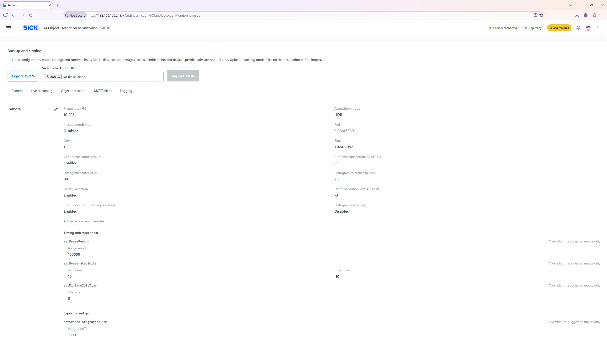
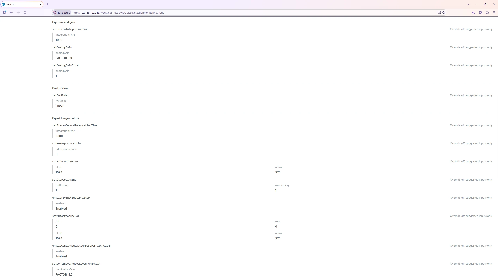
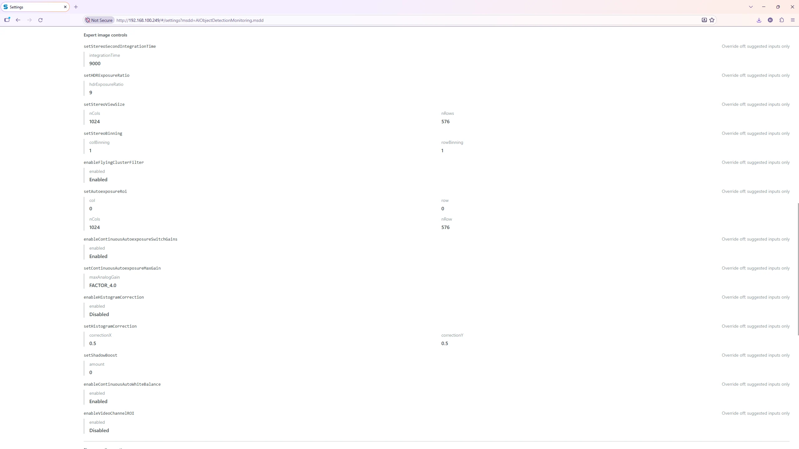
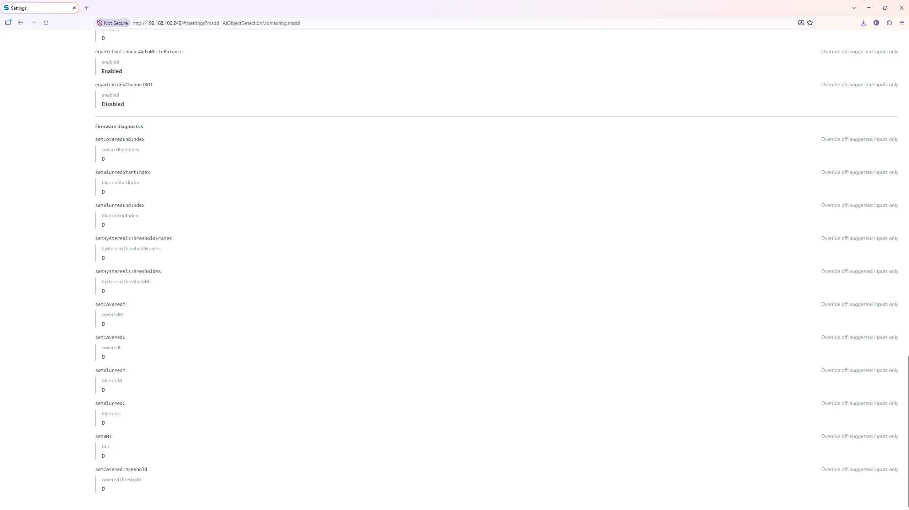

Settings → Camera
Camera Settings
These options control the Visionary B-Two image acquisition used by both preview and inference. Use the optimized settings as a starting point and adjust only for the scene and lighting.

Standard camera parameters
| Parameter | Meaning and optimized value |
|---|---|
| Frames per second | Acquisition target FPS; editable range 1–30. Optimized 10 FPS. Higher FPS does not imply a faster inference cycle and can raise camera workload. |
| Acquisition mode | HDR helps accommodate bright/dark regions; NORMAL uses normal acquisition. Optimized HDR. |
| Include depth map | Adds a depth map to camera acquisition when enabled. Optimized Off; version 1.0.0 does not use it for 3D object localization. |
| Red gain | Red-channel amplification for white balance. Input 0–3.9; optimized 0.93615239. |
| Green gain | Green-channel amplification; optimized 1.0. |
| Blue gain | Blue-channel amplification; optimized 1.02428192. |
| Auto exposure | Automatically adjusts exposure for lighting changes. Optimized On. |
| Auto exposure sensitivity | Responsiveness/strength of auto-exposure adjustment, from 0.01 to 1. Optimized 0.9. |
| Auto exposure histogram center | Target center of brightness histogram used by the automatic exposure, 0–255. Optimized 90. |
| Auto exposure center bins delta | Histogram window around the target center, 0–255. Optimized 20. |
| Depth validation | Applies camera depth-quality validation when enabled. Optimized On. |
| Depth validation level | Depth-quality validation setting from −9 to +9. Optimized −3; adjust with camera expertise. |
| Histogram equalization | Enhances image contrast using histogram equalization; optimized On. |
| Histogram equalization averaging | Averaging mode associated with histogram equalization; optimized Off. |
Advanced camera SDK overrides
The lower section exposes additional camera SDK controls. Overrides are opt-in: enabling one can override a normal setting and potentially conflict with another enabled method. The UI blocks a detected conflicting configuration.



Safe adjustment procedure
- Export the current settings backup.
- Keep HDR and auto exposure enabled initially and verify normal image brightness in Monitoring.
- If colors or brightness are wrong, adjust one standard parameter at a time, save and reload; check the image with an unchanged target scene.
- Only use advanced SDK overrides when the parameter meaning is confirmed for the device firmware.
- If image acquisition stops after a change, restore camera defaults or re-import the previous good backup.
Do not enable depth processing just to obtain 3D object
positions.
The version 1.0.0 detection output uses normalized
2D bounding boxes only.